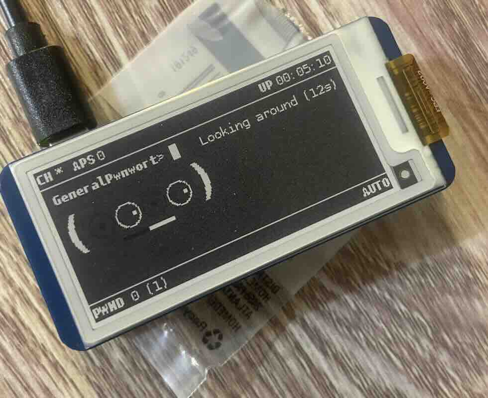

Home
About
Blog
Contact
Welcome to my personal webpage!
εἰς τί ἐδίστασας
My Weekly Volunteer Chess Meetup.
▶
The messy state of my homelab.
◀
▶
My cat helping me with a Linux install.
◀
▶

Finally bringing my Pwnagotchi to life!
◀